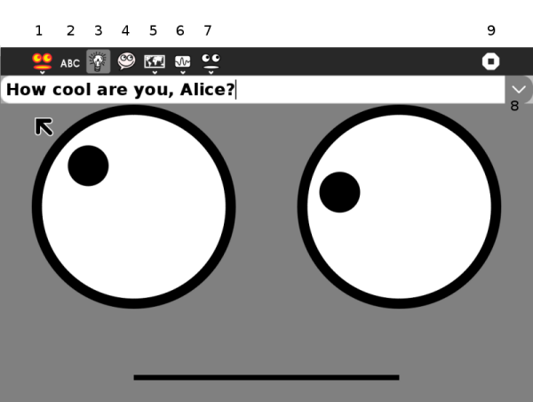

Speak¶

The toolbar buttons explained
Activity tab. In the first field name the session. The book and pencil icon, the Description button allows you to add a description to the Journal entry. Thirdly select Private, or My Neighbourhood mode.
Type something to hear robot Alice read it aloud.
Ask robot Alice any question.
Voice chat.
Set language.
Set pitch of voice and rate of delivery.
Alter shape of eyes and mouth
Click the arrow button, and use the up/down arrow keys to scroll back through a history of things you have typed.
Stop, or close the Activity
Using¶
Speak is a talking face for the XO laptop. Anything you type will be spoken aloud using the XO’s speech synthesizer, espeak. Use the toolbars at the top to change the voice’s accent, rate and pitch or the shape of the eyes and mouth.
You can ask Alice a question too.
This is a great way to experiment with the speech synthesizer, learn to type or just have fun making a funny face for your XO.
After you’ve adjusted the settings it looks nicer in full-screen mode (Press Alt-Enter to switch).
Use the Journal to resume your Speak activity including all voice, face and history settings.
Page suggested improvements¶
… add the ideas.
Expand voice chat.
Where Speak is good
Early reading - early writing - with FotoToon
Reading aloud Help pages
Learn a language
Note
This is an experimental new page. You can improve it yourself by following How to edit Help and contribute, and perhaps borrowing content from http://wiki.laptop.org/go/Speak